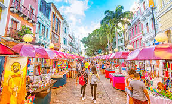
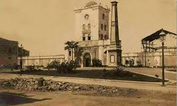

Rua do Bom Jesus
A Rua do Bom Jesus é uma das mais antigas e tradicionais ruas do Recife Antigo. Ela é conhecida pelas suas coloridas fachadas coloniais e pela famosa Sinagoga Kahal Zur Israel, a mais antiga das Américas.
Torre Malakoff
A Torre Malakoff é um importante monumento histórico e cultural do Recife. Originalmente construída como um observatório astronômico, hoje ela é usada para eventos culturais e exposições de arte.
